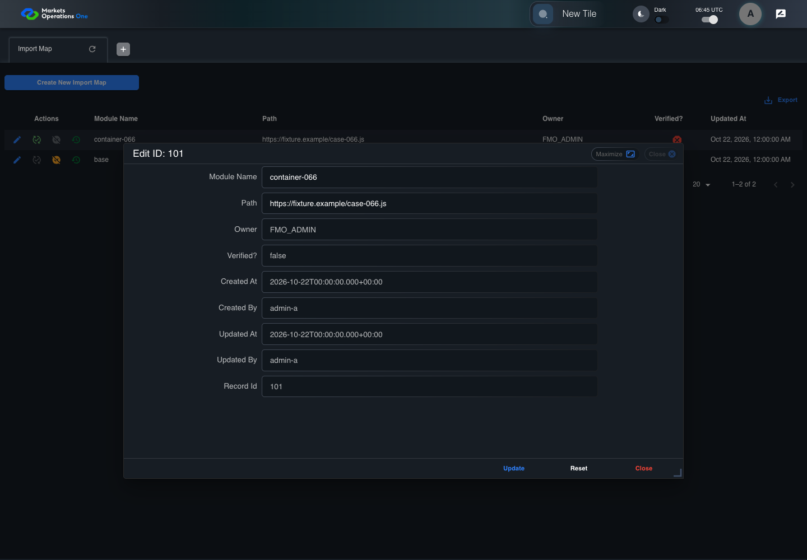
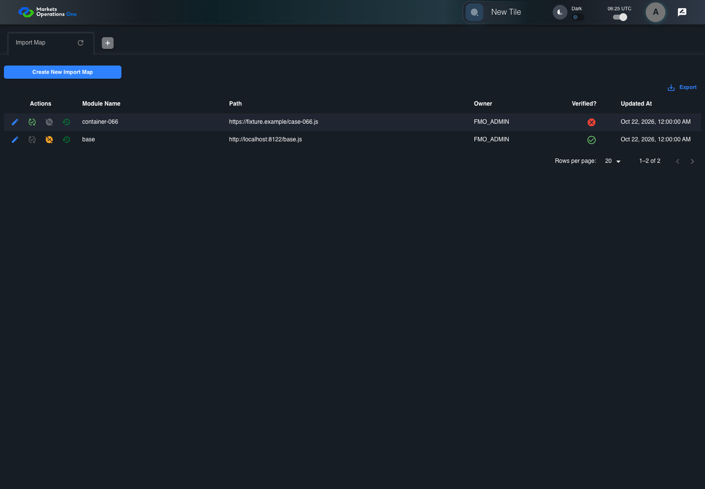
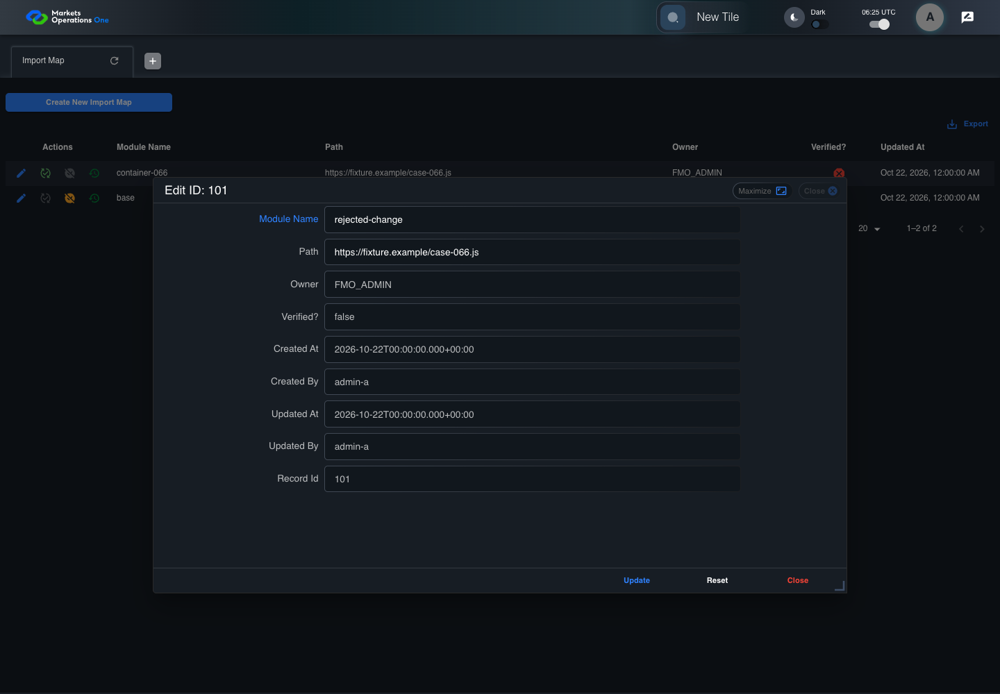
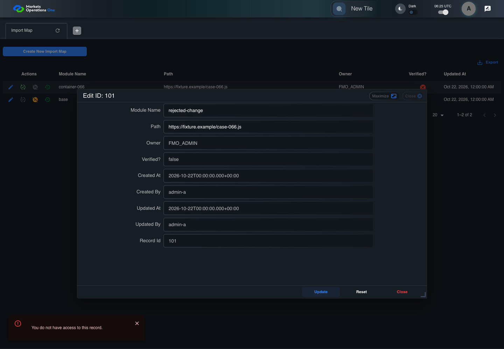
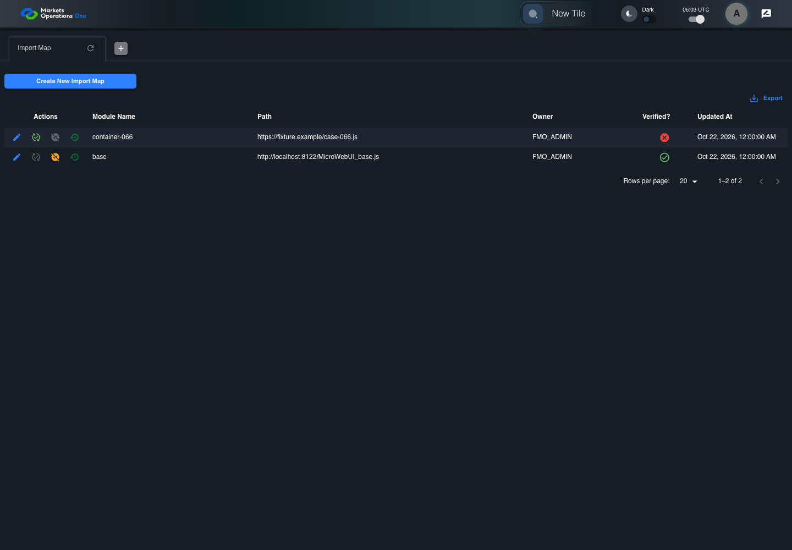

All canonical cases
BFF-ADM-066: Reject Import Map update after ownership changes Business acceptance remains unverified. Owner: unknown. Review the canonical definition and fixture limits before acceptance.
Latest local result: PASS Business acceptance: NOT_ESTABLISHED.
The latest local result describes execution. The historical definition review assesses the case design before execution.
Latest step screenshot evidence: COMPLETE . 13/13 canonical steps have execution screenshots.
Canonical Gherkin definition . Definition version: 2. SHA-256: a039ce3949d1149790aa5b7dc347fe4a3719804a39b448606cdbde543d860bad.
Historical definition review (preflight): UNVERIFIED A definition review FAIL can coexist with local PASS. The definition failed preflight quality checks.
This historical review does not change the latest execution result. Resolve definition gaps before business acceptance.
Canonical Gherkin steps Feature: Admin authority
@BFF-ADM-066
Scenario: Reject Import Map update after ownership changes
Given Admin A uses subject "admin-a" with role "FMO_ADMIN" in an isolated authenticated browser
And the controlled Import Map fixture records the initial grid rows and persisted values
And the Import Map grid has record "101" owned by "FMO_ADMIN"
And the baseline fixture data defines "Module Name" as "container-066"
And the baseline fixture data defines "Path" as "https://fixture.example/case-066.js"
When Admin A clicks the button labeled "Edit" in the Import Map grid row with "Record Id" "101"
Then the dialog titled "edit ID: 101" is visible on the Import Map administration page
When the controlled database event changes record "101" owner to "OTHER_ADMIN" before submission
And Admin A fills the textbox labeled "Module Name" with "rejected-change" in dialog "edit ID: 101"
And Admin A fills the textbox labeled "Path" with "https://fixture.example/case-066.js" in dialog "edit ID: 101"
And Admin A clicks the button labeled "Update" in dialog "edit ID: 101"
Then the alert with severity "error" in the portal snackbar contains the exact text "You do not have access to this record."
And the Import Map data grid with column "Record Id" row identifiers and loaded field values equal the initial grid snapshot on the Import Map administration page Acceptance and evidence limits: NO_COMPLETE_REAL_APPLICATION_BINDING, CANONICAL_REVIEW_OR_EVIDENCE_UNRESOLVED.
Planned essential canonical frames: 3. Plan completeness requires separate review.
Latest attempt BFF-ADM-066 current BFF administration through actual UI PASS · application/run-072/bff-adm-066-current-bff-administration-through-actual-ui-2cffedc0794d-attempt-1 · ACTUAL_APPLICATION_LOCAL_SERVICES
Actual current React and exact-current BFF admin controllers/services/JPA with actual migration DDL in disposable PostgreSQL. Controlled OUD/EMS2 identities and local Spring bootstrap. Fixture SQL seeds/mutates isolated records; service errors are actual database errors. Undefined agreed messages remain unresolved acceptance.
2026-10-22T06:45:51.986Z to 2026-10-22T06:45:56.917Z
Assertions and result · Artifact manifest · Exact run inputs and source hashes
Result SHA-256: ebc18617a1a46759f0b5ec805725dbe498f7da2b8a829f28ca747a9bf435f38a Playwright trace
Machine observations Screenshot capture: CAPTURED. Named frames: 14.
Step screenshot evidence: COMPLETE. 13/13 canonical steps have execution screenshots.
Canonical step timeline Given Admin A uses subject "admin-a" with role "FMO_ADMIN" in an isolated authenticated browser
1. step-01 Visible state after step 1: Given Admin A uses subject "admin-a" with role "FMO_ADMIN" in an isolated authenticated browser
2026-10-22T06:45:53.962Z · 1440×10005e4a9e9234c70a3b6d4c44eb8756f46800ee714a49d9f5bcf84de9e038ec2b28 And the controlled Import Map fixture records the initial grid rows and persisted values
2. step-02 Visible state after step 2: And the controlled Import Map fixture records the initial grid rows and persisted values
2026-10-22T06:45:54.111Z · 1440×10005e4a9e9234c70a3b6d4c44eb8756f46800ee714a49d9f5bcf84de9e038ec2b28 And the Import Map grid has record "101" owned by "FMO_ADMIN"
3. step-03 Visible state after step 3: And the Import Map grid has record "101" owned by "FMO_ADMIN"
2026-10-22T06:45:54.178Z · 1440×10005e4a9e9234c70a3b6d4c44eb8756f46800ee714a49d9f5bcf84de9e038ec2b28 And the baseline fixture data defines "Module Name" as "container-066"
4. step-04 Visible state after step 4: And the baseline fixture data defines "Module Name" as "container-066"
2026-10-22T06:45:54.244Z · 1440×10005e4a9e9234c70a3b6d4c44eb8756f46800ee714a49d9f5bcf84de9e038ec2b28 And the baseline fixture data defines "Path" as "https://fixture.example/case-066.js"
5. step-05 Visible state after step 5: And the baseline fixture data defines "Path" as "https://fixture.example/case-066.js"
2026-10-22T06:45:54.315Z · 1440×10005e4a9e9234c70a3b6d4c44eb8756f46800ee714a49d9f5bcf84de9e038ec2b28 When Admin A clicks the button labeled "Edit" in the Import Map grid row with "Record Id" "101"

6. step-06 Visible state after step 6: When Admin A clicks the button labeled "Edit" in the Import Map grid row with "Record Id" "101"
2026-10-22T06:45:54.575Z · 1440×100012f43549d6b44494fbaebdf0524f19521730f068bed46f1ca5086fc567bdab31 Then the dialog titled "edit ID: 101" is visible on the Import Map administration page
7. step-07 Visible state after step 7: Then the dialog titled "edit ID: 101" is visible on the Import Map administration page
2026-10-22T06:45:54.656Z · 1440×1000bef80e7428b8d5a66cb8acc0e268a593b47e5fe7d8f79bba6a7e1cf1cf037794 When the controlled database event changes record "101" owner to "OTHER_ADMIN" before submission
8. step-08 Visible state after step 8: When the controlled database event changes record "101" owner to "OTHER_ADMIN" before submission
2026-10-22T06:45:54.764Z · 1440×1000bef80e7428b8d5a66cb8acc0e268a593b47e5fe7d8f79bba6a7e1cf1cf037794 And Admin A fills the textbox labeled "Module Name" with "rejected-change" in dialog "edit ID: 101"
9. step-09 Visible state after step 9: And Admin A fills the textbox labeled "Module Name" with "rejected-change" in dialog "edit ID: 101"
2026-10-22T06:45:55.214Z · 1440×10001ccbe5daf2692782a629080fb69e1bdcb3aaab3583d9d766b0421bb2c5dbf94e And Admin A fills the textbox labeled "Path" with "https://fixture.example/case-066.js" in dialog "edit ID: 101"
10. step-10 Visible state after step 10: And Admin A fills the textbox labeled "Path" with "https://fixture.example/case-066.js" in dialog "edit ID: 101"
2026-10-22T06:45:55.652Z · 1440×1000170f9a73ef6cd463320c00350c06594e4fee9b3122bf1419974e64c8e49c6b5c And Admin A clicks the button labeled "Update" in dialog "edit ID: 101"
11. step-11 Visible state after step 11: And Admin A clicks the button labeled "Update" in dialog "edit ID: 101"
2026-10-22T06:45:55.917Z · 1440×10009fee8f5d61951689ebe2c311f604d96d3a49906c296b871fe8ae4d805751070d Then the alert with severity "error" in the portal snackbar contains the exact text "You do not have access to this record."
12. step-12 Visible state after step 12: Then the alert with severity "error" in the portal snackbar contains the exact text "You do not have access to this record."
2026-10-22T06:45:56.004Z · 1440×1000e1708d106c1d4fe2430601a26c4d7b9c6ef315699b9e90fa047ec9d9e8da1d9c And the Import Map data grid with column "Record Id" row identifiers and loaded field values equal the initial grid snapshot on the Import Map administration page
13. step-13 Visible state after step 13: And the Import Map data grid with column "Record Id" row identifiers and loaded field values equal the initial grid snapshot on the Import Map administration page
2026-10-22T06:45:56.147Z · 1440×1000e1708d106c1d4fe2430601a26c4d7b9c6ef315699b9e90fa047ec9d9e8da1d9c Additional named frames 14. final-result The final visible state after the named test assertions.
2026-10-22T06:45:56.267Z · 1440×1000e1708d106c1d4fe2430601a26c4d7b9c6ef315699b9e90fa047ec9d9e8da1d9c Screenshots establish visible state only. Assertions and traces support functional claims.
Earlier attempt history (2) Earlier attempt PASS (superseded by latest PASS) BFF-ADM-066 current BFF administration through actual UI PASS · application/run-066/bff-adm-066-current-bff-administration-through-actual-ui-2cffedc0794d-attempt-1 · ACTUAL_APPLICATION_LOCAL_SERVICES
Actual current React and exact-current BFF admin controllers/services/JPA with actual migration DDL in disposable PostgreSQL. Controlled OUD/EMS2 identities and local Spring bootstrap. Fixture SQL seeds/mutates isolated records; service errors are actual database errors. Undefined agreed messages remain unresolved acceptance.
2026-10-22T06:25:24.669Z to 2026-10-22T06:25:30.215Z
Assertions and result · Artifact manifest · Exact run inputs and source hashes
Result SHA-256: cdef2508cd4530e07e164c06e203124a83bbee32c3b7808e0c0ba4f7832332f4 Playwright trace
Machine observations Screenshot capture: CAPTURED. Named frames: 14.
Step screenshot evidence: COMPLETE. 13/13 canonical steps have execution screenshots.
Canonical step timeline Given Admin A uses subject "admin-a" with role "FMO_ADMIN" in an isolated authenticated browser

1. step-01 Visible state after step 1: Given Admin A uses subject "admin-a" with role "FMO_ADMIN" in an isolated authenticated browser
2026-10-22T06:25:27.399Z · 1440×10003c94d29bae8cf54089c98ef8ce7fc270e1237b78b02472c2f150bda125a6e073 And the controlled Import Map fixture records the initial grid rows and persisted values
2. step-02 Visible state after step 2: And the controlled Import Map fixture records the initial grid rows and persisted values
2026-10-22T06:25:27.614Z · 1440×10003c94d29bae8cf54089c98ef8ce7fc270e1237b78b02472c2f150bda125a6e073 And the Import Map grid has record "101" owned by "FMO_ADMIN"
3. step-03 Visible state after step 3: And the Import Map grid has record "101" owned by "FMO_ADMIN"
2026-10-22T06:25:27.716Z · 1440×10003c94d29bae8cf54089c98ef8ce7fc270e1237b78b02472c2f150bda125a6e073 And the baseline fixture data defines "Module Name" as "container-066"
4. step-04 Visible state after step 4: And the baseline fixture data defines "Module Name" as "container-066"
2026-10-22T06:25:27.799Z · 1440×10003c94d29bae8cf54089c98ef8ce7fc270e1237b78b02472c2f150bda125a6e073 And the baseline fixture data defines "Path" as "https://fixture.example/case-066.js"
5. step-05 Visible state after step 5: And the baseline fixture data defines "Path" as "https://fixture.example/case-066.js"
2026-10-22T06:25:27.932Z · 1440×10003c94d29bae8cf54089c98ef8ce7fc270e1237b78b02472c2f150bda125a6e073 When Admin A clicks the button labeled "Edit" in the Import Map grid row with "Record Id" "101"
6. step-06 Visible state after step 6: When Admin A clicks the button labeled "Edit" in the Import Map grid row with "Record Id" "101"
2026-10-22T06:25:28.296Z · 1440×100005243f18b6dd5f3d7de4d196ec55890ee50a4ba4e5d101418f056ef2d103f5f7 Then the dialog titled "edit ID: 101" is visible on the Import Map administration page
7. step-07 Visible state after step 7: Then the dialog titled "edit ID: 101" is visible on the Import Map administration page
2026-10-22T06:25:28.419Z · 1440×10000032cde85190871636b40358c8bc6b9c8401b68a67ac7c37fb423cd858f8e3f3 When the controlled database event changes record "101" owner to "OTHER_ADMIN" before submission
8. step-08 Visible state after step 8: When the controlled database event changes record "101" owner to "OTHER_ADMIN" before submission
2026-10-22T06:25:28.599Z · 1440×10000032cde85190871636b40358c8bc6b9c8401b68a67ac7c37fb423cd858f8e3f3 And Admin A fills the textbox labeled "Module Name" with "rejected-change" in dialog "edit ID: 101"

9. step-09 Visible state after step 9: And Admin A fills the textbox labeled "Module Name" with "rejected-change" in dialog "edit ID: 101"
2026-10-22T06:25:29.068Z · 1440×1000b372adef1cb71182e2f9d67323a9485342f94b708cdf1ee7b1212da4e7bee7d3 And Admin A fills the textbox labeled "Path" with "https://fixture.example/case-066.js" in dialog "edit ID: 101"
10. step-10 Visible state after step 10: And Admin A fills the textbox labeled "Path" with "https://fixture.example/case-066.js" in dialog "edit ID: 101"
2026-10-22T06:25:29.493Z · 1440×10009aecac4077e02b927fce9cd37709e3c79e7ed7f61a9e0c44d1f9d3efbd0331f0 And Admin A clicks the button labeled "Update" in dialog "edit ID: 101"

11. step-11 Visible state after step 11: And Admin A clicks the button labeled "Update" in dialog "edit ID: 101"
2026-10-22T06:25:29.735Z · 1440×10008dc09de55aaa5bc7f5c9611bfb7d3c33eee43b0362a337430119a41e735dfecf Then the alert with severity "error" in the portal snackbar contains the exact text "You do not have access to this record."
12. step-12 Visible state after step 12: Then the alert with severity "error" in the portal snackbar contains the exact text "You do not have access to this record."
2026-10-22T06:25:29.783Z · 1440×1000583da0f13edde4c3ce522306aad721c883b0a97a0e68f3fdb8347e615fd85a13 And the Import Map data grid with column "Record Id" row identifiers and loaded field values equal the initial grid snapshot on the Import Map administration page
13. step-13 Visible state after step 13: And the Import Map data grid with column "Record Id" row identifiers and loaded field values equal the initial grid snapshot on the Import Map administration page
2026-10-22T06:25:29.883Z · 1440×1000583da0f13edde4c3ce522306aad721c883b0a97a0e68f3fdb8347e615fd85a13 Additional named frames 14. final-result The final visible state after the named test assertions.
2026-10-22T06:25:29.949Z · 1440×1000583da0f13edde4c3ce522306aad721c883b0a97a0e68f3fdb8347e615fd85a13 Screenshots establish visible state only. Assertions and traces support functional claims.
Earlier attempt PASS (superseded by latest PASS) BFF-ADM-066 current BFF administration through actual UI PASS · application/run-062/bff-adm-066-current-bff-administration-through-actual-ui-2cffedc0794d-attempt-1 · ACTUAL_APPLICATION_LOCAL_SERVICES
Actual current React and exact-current BFF admin controllers/services/JPA with actual migration DDL in disposable PostgreSQL. Controlled OUD/EMS2 identities and local Spring bootstrap. Fixture SQL seeds/mutates isolated records; service errors are actual database errors. Undefined agreed messages remain unresolved acceptance.
2026-10-22T06:03:43.167Z to 2026-10-22T06:03:49.060Z
Assertions and result · Artifact manifest · Exact run inputs and source hashes
Result SHA-256: b9249d5b27905dd633acb13e5507f03d76fc58147ca1a8a9690635025798dc11 Playwright trace
Machine observations Screenshot capture: CAPTURED. Named frames: 14.
Step screenshot evidence: COMPLETE. 13/13 canonical steps have execution screenshots.
Canonical step timeline Given Admin A uses subject "admin-a" with role "FMO_ADMIN" in an isolated authenticated browser

1. step-01 Visible state after step 1: Given Admin A uses subject "admin-a" with role "FMO_ADMIN" in an isolated authenticated browser
2026-10-22T06:03:45.293Z · 1440×10000158ad4f2db0438cab5a957c348bacf139b1f912ddcd1766727b7ca93f3c9463 And the controlled Import Map fixture records the initial grid rows and persisted values
2. step-02 Visible state after step 2: And the controlled Import Map fixture records the initial grid rows and persisted values
2026-10-22T06:03:45.444Z · 1440×10000158ad4f2db0438cab5a957c348bacf139b1f912ddcd1766727b7ca93f3c9463 And the Import Map grid has record "101" owned by "FMO_ADMIN"
3. step-03 Visible state after step 3: And the Import Map grid has record "101" owned by "FMO_ADMIN"
2026-10-22T06:03:45.515Z · 1440×10000158ad4f2db0438cab5a957c348bacf139b1f912ddcd1766727b7ca93f3c9463 And the baseline fixture data defines "Module Name" as "container-066"
4. step-04 Visible state after step 4: And the baseline fixture data defines "Module Name" as "container-066"
2026-10-22T06:03:45.562Z · 1440×10001e06331dfdfd44b49d309ebd5036a42b805c5af65af5e6b8b1aba92331ede6da And the baseline fixture data defines "Path" as "https://fixture.example/case-066.js"
5. step-05 Visible state after step 5: And the baseline fixture data defines "Path" as "https://fixture.example/case-066.js"
2026-10-22T06:03:45.612Z · 1440×10001e06331dfdfd44b49d309ebd5036a42b805c5af65af5e6b8b1aba92331ede6da When Admin A clicks the button labeled "Edit" in the Import Map grid row with "Record Id" "101"
6. step-06 Visible state after step 6: When Admin A clicks the button labeled "Edit" in the Import Map grid row with "Record Id" "101"
2026-10-22T06:03:45.862Z · 1440×10008e845856b2ee876881bfeb037be47fb4320d20053123ef32f7f7ae0b9131babc Then the dialog titled "edit ID: 101" is visible on the Import Map administration page
7. step-07 Visible state after step 7: Then the dialog titled "edit ID: 101" is visible on the Import Map administration page
2026-10-22T06:03:45.944Z · 1440×1000e829d002ee064bcf64a7cc4b3f04fbe14d085c0a90d9edc0ea41191c28304ea6 When the controlled database event changes record "101" owner to "OTHER_ADMIN" before submission
8. step-08 Visible state after step 8: When the controlled database event changes record "101" owner to "OTHER_ADMIN" before submission
2026-10-22T06:03:46.029Z · 1440×1000e829d002ee064bcf64a7cc4b3f04fbe14d085c0a90d9edc0ea41191c28304ea6 And Admin A fills the textbox labeled "Module Name" with "rejected-change" in dialog "edit ID: 101"
9. step-09 Visible state after step 9: And Admin A fills the textbox labeled "Module Name" with "rejected-change" in dialog "edit ID: 101"
2026-10-22T06:03:46.558Z · 1440×1000813c757cc6bf295e27f117a5e9b0ea83759f4c72fb3390a00361dfa9ed60f1db And Admin A fills the textbox labeled "Path" with "https://fixture.example/case-066.js" in dialog "edit ID: 101"
10. step-10 Visible state after step 10: And Admin A fills the textbox labeled "Path" with "https://fixture.example/case-066.js" in dialog "edit ID: 101"
2026-10-22T06:03:47.068Z · 1440×100097403464e2800f11c0048942a7ef1ae22f3e7630c3a5e15f72d68093faa264e1 And Admin A clicks the button labeled "Update" in dialog "edit ID: 101"
11. step-11 Visible state after step 11: And Admin A clicks the button labeled "Update" in dialog "edit ID: 101"
2026-10-22T06:03:47.507Z · 1440×1000042b073abb486fa0bdbde4bdf65d12076bfa6f6d348cfb8c4dfcfda35b18bf18 Then the alert with severity "error" in the portal snackbar contains the exact text "You do not have access to this record."
12. step-12 Visible state after step 12: Then the alert with severity "error" in the portal snackbar contains the exact text "You do not have access to this record."
2026-10-22T06:03:47.621Z · 1440×1000da43e88ea5430fd007265701723e29f0214d8a27399b94d3bfb50ee2f94e2572 And the Import Map data grid with column "Record Id" row identifiers and loaded field values equal the initial grid snapshot on the Import Map administration page
13. step-13 Visible state after step 13: And the Import Map data grid with column "Record Id" row identifiers and loaded field values equal the initial grid snapshot on the Import Map administration page
2026-10-22T06:03:47.852Z · 1440×1000da43e88ea5430fd007265701723e29f0214d8a27399b94d3bfb50ee2f94e2572 Additional named frames 14. final-result The final visible state after the named test assertions.
2026-10-22T06:03:48.031Z · 1440×1000da43e88ea5430fd007265701723e29f0214d8a27399b94d3bfb50ee2f94e2572 Screenshots establish visible state only. Assertions and traces support functional claims.